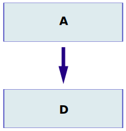
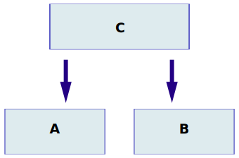
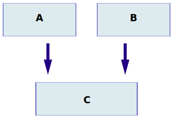
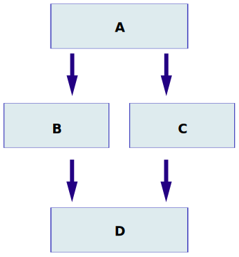

Inheritance & Its Different Types with Examples
Inheritance in C++ an Overview
- Reusability is a very important feature of OOPs
- In C++ we can resues a class and add additional features
- Reusing classes saves time and money
- Reusing already tested and debugged classes will save a lot of effort of developing and debugging
the same thing agian
What is Inheritance in C++?
- The concept of reusability in C++ is supported using inheritance
- We can reuse the properties of an existing class by inheriting it
- The existing class is called a base class
- The new class which is inherited from the base class is called a derived class
- Reusing classes saves time and money
- There are different types of inheritance in C++
Forms of inheritance
- Single Inheritance
- Multiple Inheritance
- Hierarchical Inheritance
- Multilevel Inheritance
- Hybrid Inheritance
Single Inheritance
- Single inheritance is a type of inheritance in which a derived class in inherited iwth only one base class.
- For example, we have two classes "employee" and "programmer".
- If the "programmer" class is inherited from the "employee" class which means that the "programmer" class can now implement the functionalities of the "employee" class.

Hierarchical Inheritance
- It is type of heritance in which several derived classes are inherited from a single base class.

Multilevel Inheritance
- It is a type of inheritance in which one class is inherited from another derived class.

Hybrid Inheritance
- It is a combination of multiple inheritance and multilevel inheritance.
- In hybrid inheritance, a class is derived from two classes as in multiple inheritances. However, one of the parent classes is not a base class.
